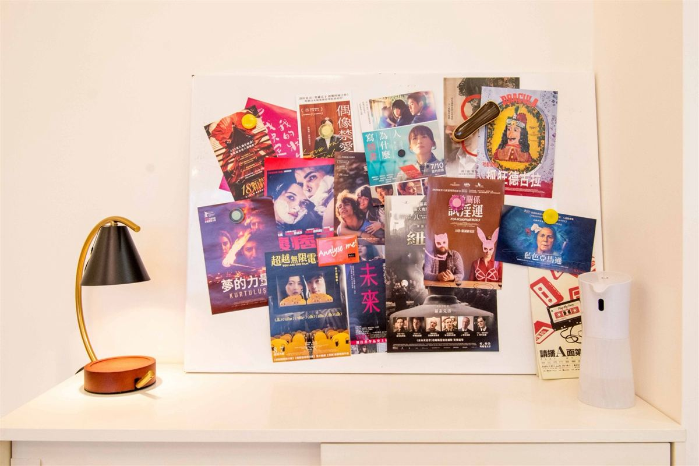

認識漸明

從被理解開始，慢慢走向明朗。
有時候，我們對自己的感受感到困惑；有時候，我們在關係中遇到難以面對的困難；也有時候，即使生活看似一切如常，內心仍有些說不清楚的感受。
漸明希望提供一個安全、溫暖且值得信任的空間，讓每個人都能在專業的陪伴下，逐漸認識自己、面對困難，並發現新的可能。
這是我們成立漸明的初衷。
為什麼叫做「漸明」？
「漸明」象徵一個逐漸理解、逐漸看見可能性的過程。
有些理解可能在一次對話中出現，有些改變則需要更多時間。每個人的生命經驗、需要與步調都不同，因此，心理諮商也不必遵循相同的路徑。
我們不預設每個人都需要長期諮商，也不認為改變只有一種方式。
「漸明」不是要求人們盡快走向某個理想的狀態，而是相信，即使身處困惑與不確定之中，新的理解與可能仍然可以逐漸形成。
我們如何看待心理諮商？
我們相信，每個人都是獨特的。即使面對相似的困難，不同的人也可能有不同的生命經驗與需要。
因此，我們重視心理師與尋求諮商的人之間的合作，希望透過專業的傾聽與對話，共同了解目前的困難、期待與目標，並找到適合的工作方式。
對漸明而言，心理諮商不只是運用知識與技術，也包含在專業關係中建立信任，讓原本難以表達的經驗，有機會被聽見與思考。
我們相信，理解可以在對話中逐漸形成，而新的選擇也可能隨之出現。
多元專業，共同思考
漸明以心理動力思考作為共同的專業基礎，重視人的內在經驗、治療關係，以及個人所處的生命與關係脈絡。
我們的心理師具有不同的專業訓練與治療取向，包括心理動力、認知行為、伴侶與家庭系統，以及後現代等不同觀點。
我們尊重不同理論與方法的價值，支持心理師依照自身的專業訓練、臨床判斷與接受諮商者的需要，採取適切的工作方式。
心理動力思考為我們提供共同討論臨床經驗的基礎，但不意味著所有心理師都必須採用相同的治療模式。
我們相信，不同觀點之間的交流，能夠豐富我們對人的理解。
一個持續學習與反思的專業共同體
漸明希望建立的不只是一個提供心理諮商服務的場所，也是一個心理師能夠持續對話、反思與共同學習的專業共同體。
我們重視好奇、開放與反思的態度，歡迎不同的觀點，也允許質疑與不同意見。我們期待彼此願意理解不同觀點背後的思考，而不是急於否定或要求一致。
我們也相信，專業成長不只是累積知識與技術，更需要願意檢視自己的判斷，並從實際的工作經驗中持續學習。
透過交流與合作，我們希望建立一個尊重專業自主，也能共同承擔專業責任的團隊。
與你一起，探索新的可能
無論你正在經歷情緒困擾、關係中的難題，或希望更深入地認識自己，我們都希望漸明能成為一個讓你安心探索的地方。
你不需要在開始之前，就已經知道所有問題的答案。
我們可以從你此刻的需要開始，一起尋找適合的方向。